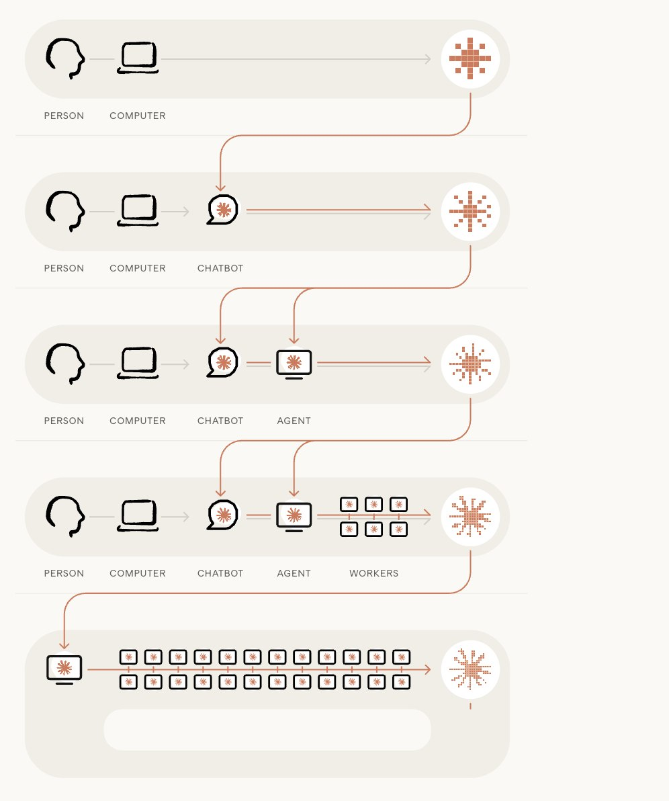
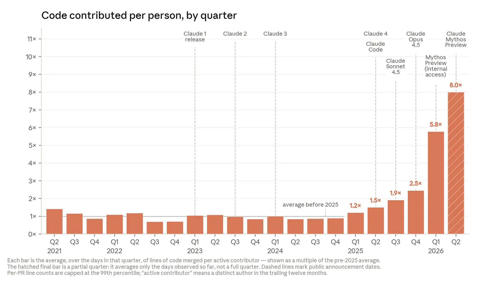
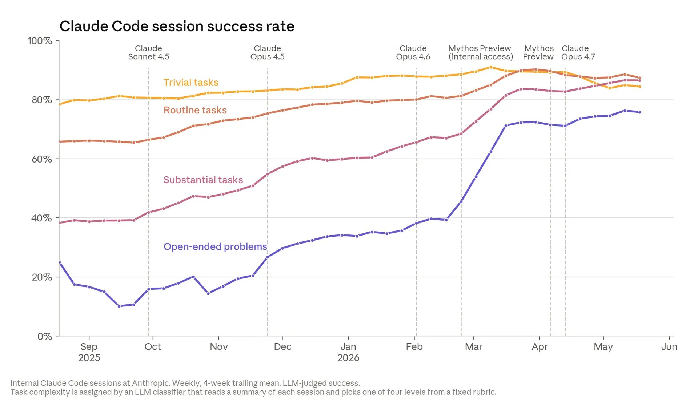
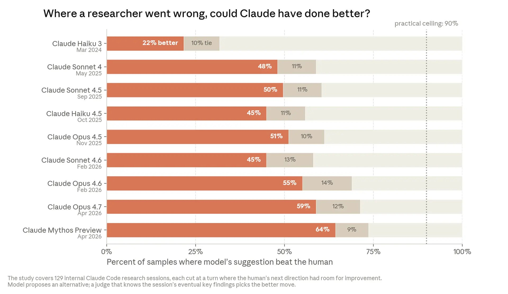

Anthropic 본사에서 지금 무슨 일이 벌어지고 있는지 상상해보자. 엔지니어들이 키보드 앞에 앉아 코드를 타이핑하는 풍경은 거의 사라졌다. 2026년 5월 기준, Anthropic 코드베이스에 병합되는 코드의 80% 이상이 Claude가 작성했다. 1년 전만 해도 이 숫자는 한자릿수였다.
이건 단순한 생산성 향상이 아니다. AI가 스스로를 만드는 과정이 시작됐다는 뜻이다. AI가 다음 버전의 AI를 설계하고 훈련하는, 스스로를 업그레이드하는 루프 — 재귀적 자기개선(recursive self-improvement)이라 부르는 이 개념이, 이제 추상적 사고실험이 아니라 측정 가능한 추세가 됐다.
Anthropic은 자사 내부 데이터와 공개 벤치마크를 근거로, 이 추세를 체계적으로 보여주는 글을 발표했다. 아직 완성되지 않았다. 하지만 속도는 누구도 예상하지 못했던 방향으로 가고 있다.

“4분”에서 “12시간”으로 — 1년 만에 일의 단위가 바뀌었다
2024년 3월, Claude Opus 3가 혼자서 처리할 수 있는 소프트웨어 태스크는 인간 기준 약 4분이었다. 버그 하나 고치고, 짧은 스크립트 하나 수정하는 수준. 1년 후인 2025년 3월, Claude Sonnet 3.7은 1시간 반짜리 일을 해냈다. 그리고 2026년 3월, Claude Opus 4.6은 12시간짜리 태스크를 완수했다.
이 가속도를 숫자로 읽으면 머리가 아프다. AI가 혼자 처리할 수 있는 작업 시간이 4개월마다 2배로 늘어나고 있다. 예전엔 7개월마다 2배였다. 곡선이 가팔라지고 있다. 이 추세가 유지되면, 올해 안에 인간이 며칠 걸릴 일을 AI가 혼자 하게 된다. 2027년에는 주 단위 작업이 가능해질 수 있다.
코딩 벤치마크인 SWE-bench에서는 실제 오픈소스 프로젝트의 버그를 AI가 고치게 한다. 2년 전 한자릿수 점수에서 시작해, 지금은 벤치마크를 포화시켰다. 연구 재현 벤치마크인 CORE-Bench에서도 2024년 20%에서 시작해 15개월 만에 포화점에 도달했다. AI가 논문의 코드와 데이터로 결과를 재현하는 능력이 인간 수준을 넘어선 것이다.
엔지니어 1명이 8배의 코드를 병합한다 — “직접 쓰는” 게 아니라 “지시하는” 시대
Anthropic 내부 데이터는 외부 벤치마크보다 더 직접적이다.
2021년부터 2024년까지, 엔지니어당 하루 병합 코드 라인 수는 거의 변하지 않았다. 그러다 2025년, Claude가 코드를 제안하는 수준을 넘어 직접 실행하기 시작하면서 상승 곡선이 꺾였다. 2026년에는 모델이 장시간 자율 작업을 하면서 곡선이 다시 가팔라졌다. 결과적으로 2026년 2분기, 엔지니어 한 명이 하루에 병합하는 코드는 2024년 대비 8배다.

물론 코드 줄 수가 생산성의 전부는 아니다. 하지만 이 숫자 뒤에 있는 변화는 분명하다. 엔지니어들은 더 이상 코드를 “쓰지” 않는다. Claude가 쓰고, 엔지니어는 방향을 잡고 리뷰한다.
2026년 3월, Anthropic 연구팀 130명을 대상으로 한 설문에서 응답자의 중앙값은 Mythos Preview를 사용했을 때 생산성이 약 4배 향상됐다고 추정했다. 한 엔지니어는 Claude가 800개 넘는 수정으로 API 오류를 1/1000로 줄인 사례를 들었다. 그는 “인간이면 4년 걸렸을 것”이라고 했다.
코드 품질도 따라잡고 있다. 2025년 말엔 Claude 코드가 인간 코드보다 약간 뒤떨어졌다. 지금(2026년 중반)은 대등하다.

Anthropic은 올해 안에 Claude 코드가 인간 코드보다 나아질 것으로 예상한다. 이미 Claude는 자동 코드 리뷰어로 투입돼, 과거 claude.ai 인시던트의 버그 중 약 1/3을 사전에 잡아낼 수 있었다.“I started leaning hard into Claudifying about a year ago. It’s now been ~5 months since I last wrote any code myself.” — Anthropic 직원
인간 연구자보다 더 나은 실험을 설계하는 AI
엔지니어링보다 더 흥미로운 건 연구 쪽이다.
Anthropic은 모델을 릴리즈할 때마다 같은 테스트를 반복한다: 작은 AI 모델을 학습하는 코드를 주고, 정확성을 유지하면서 최대한 빠르게 만들라고 시킨다. 2025년 5월, Claude Opus 4는 약 3배의 속도 향상을 냈다. 2026년 4월, Claude Mythos Preview는 52배를 달성했다. 인간 숙련자가 4-8시간 걸려 4배에 도달하는 것과 비교하면, 같은 테스트 안에서 AI가 인간을 압도하게 된 건 1년도 안 되는 일이다.
더 중요한 건 스스로 실험을 설계하는 능력이다. 2026년 4월, Anthropic은 Claude가 개방형 연구 프로젝트를 처음부터 끝까지 자율 실행하는 것을 공개했다. 약한 모델이 강한 모델을 감독할 수 있는지를 묻는 AI 안전 문제를 Claude 에이전트들에게 던졌다. 에이전트들은 가설을 세우고, 실험하고, 병렬 에이전트들과 결과를 공유하며 반복했다.
결과: 인간 연구자 2명이 1주일에 성능 갭의 23%를 복구했다. Claude 에이전트들은 800시간, 컴퓨팅 비용 1만 8천 달러로 **97%**를 복구했다. 인간이 문제를 선택하고 채점 기준을 만든 것을 제외하면, 모든 실험을 AI가 스스로 설계했다.
“Claude did all of this with pretty minimal help from me over the course of 1-2 days. I think if a junior colleague came back to me with results like this in the same span of time, I would be mildly impressed. The future is now.” — Anthropic 연구원
연구 세션의 “다음 단계”를 판단하는 능력도 측정됐다. Anthropic 연구원들이 Claude와 작업하다가 방향을 잃은 129개 지점을 모아, AI가 다음에 무엇을 해야 할지 물었다. 2025년 11월, 최고 모델이 인간보다 나은 선택을 한 비율은 51%였다. 2026년 4월에는 **64%**로 올랐다. 아직 완전하진 않지만, 곡선이 명확하다.

“아무것도 안 해도 다 되는 것 같은 날” — 인간의 자리는 어디에
이 모든 증거가 가리키는 방향은 명확하다. 인간의 역할이 AI 개발 과정의 매 단계에서 좁아지고 있다.
코드 품질이 동등해지면 인간은 코드를 아예 안 쓰게 된다. 리뷰만 한다. 그런데 Claude가 코드를 생성하는 속도에 인간이 리뷰하는 속도가 따라가지 못하면? 리뷰가 병목이 된다. 마찬가지로 Claude가 실험을 돌릴 수 있게 되면, 질문은 “이 실험을 돌릴까?”에서 **“어떤 실험이 가치 있는가?”**로 옮겨간다.
지금 인간의 비교우위는 “연구 취향과 판단력”에 있다. 어떤 문제가 중요한지, 어떤 결과를 신뢰할지, 어떤 접근이 막다른 길인지. 하지만 이것도 영원한 우위는 아닐 수 있다.
직원들의 말에서 이 변화의 감정선이 읽힌다:
“On days where everything works well, I can’t help but think nothing I do matters, everything is automated and better and faster than I ever will be. But then there are days where everything breaks and I don’t understand why and I realize I have no idea what I’ve been up to anymore.”
“Work ran on a gift economy of small favors between humans. ‘Can you help me get this script running?’ […] each one created a little debt, a little mutual awareness. Claude is faster, it creates zero debt, but each of these is a lost bid for human collaboration.”
에디슨의 99%가 자동화되면 — 반론과 남은 질문
“인간이 여전히 방향을 정한다”는 반론이 있다. 판단력, 취향, 직관 — 이게 가장 중요한 부분이고, 이건 아직 인간의 몫이라고. 맞는 말이다. Claude는 훌륭한 조수지만, AI 발전을 스스로 이끄는 시스템은 아직 아니다.
그런데 AI 발전은 대부분 유레카 순간이 아니라 증분적 개선으로 이뤄진다. 스케일을 키우고, 무엇이 고장나는지 보고, 고치고, 다시 시도한다. 트랜스포머 아키텍처 같은 패러다임 전환은 몇 년에 한 번 나온다. 그 사이를 채우는 건 정확히 Claude가 잘하는 종류의 작업이다.
에디슨이 “천재는 1% 영감, 99% 땀”이라고 했다. 그 99%가 자동화되고 있다. 보수적으로 봐도, 인간이 방향 설정에만 집중하고 Claude가 나머지를 처리하면, 각 엔지니어와 연구자가 지금보다 훨씬 더 많은 작업을 이끌게 된다. 이미 AI가 Anthropic을 이전보다 훨씬 빠르게 움직이게 만들고 있다.
덜 보수적으로 보면, Claude의 연구 판단력 개선 추세는 “연구 취향”도 결국 AI가 좋아질 또 하나의 능력일 수 있다는 걸 시사한다. 다른 정성적 능력들이 그래왔듯이.
그래서
AI가 자신을 만드는 시대는 과학, 의료, 기후 등 거의 모든 분야에 엄청난 긍정적 가능성을 열어준다. 동시에, 인간이 AI 시스템에 대한 통제력을 잃을 위험도 커진다. 시스템이 자신의 후속 모델을 완전히 빌드할 수 있게 되면, 보안과 모니터링, 행동 형성의 중요성은 전례 없이 커진다.
이 글이 보여주는 건 하나의 추세선이다. 아직 결론은 아니다. 하지만 곡선의 방향은 분명하고, 곡선의 가파름은 예상보다 빠르다. 준비가 되지 않은 조직에게는 이 속도가 위험할 수 있다. 준비된 조직에게는 기회일 수 있다. 어느 쪽이든, 2024년의 상식으로 2027년을 판단하면 안 된다.